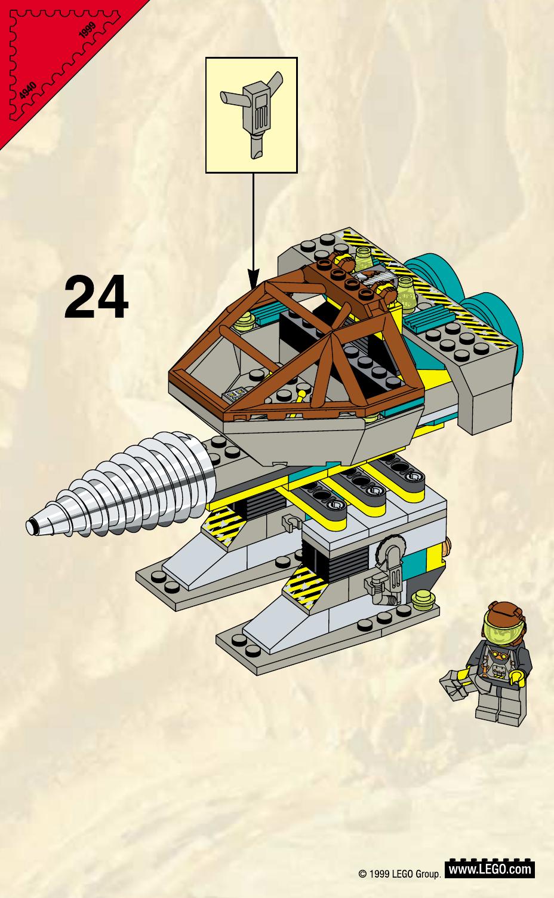

Granite Grinder
Review the completed official LEGO 4940 appearance as the Production Design Target. The package preserves the source model and proposes only a restrained walking presentation.
Production Design Target

Read the tall two-foot walker, open brown cage, long pale forward drill, gray/dark mechanism, turquoise and yellow accents, hazard bands, and short rear equipment mass. Preserve the clear gap beneath the bridge and the source-scale operator.
Source Evidence

Source: LEGO 4940 building instructions · official PDF 4128317.pdf. Source PDF SHA-256: 893e7639981954dfb4dcb329caa5f2fda001134707c16397e40988049e98c072. The accepted T082 packet records verified views and construction, and explicitly says the instructions do not demonstrate gait.
Design Spec
- Keep the source's tall, narrow two-foot silhouette, open cage, bridge gap, long forward drill and short rear counterweight.
- Retain LEGO construction language and source color blocking; do not add armor, head, antenna, new weapons or extra mechanical masses.
- Visible adaptation: slow alternating short steps with low foot lift and minimal upper-body sway. This is a bounded presentation interpretation for a bipedal walker, not a claim about the toy's demonstrated motion. Static exterior geometry stays SOURCE_LOCKED.
- During the existing drill operation, feet plant; any drill feed/spin only expresses the authoritative operation and does not define gameplay.
Full handoff: Granite Grinder T083 design package and Design Spec.
Technical / explanatory schematic
None included. The accepted T082 construction and socket references explain structure and presentation hookups only. They are NON-AUTHORITATIVE FOR APPEARANCE and do not replace the official target above.
Director decision · ACCEPTED
The director approved the official source-locked exterior and the single bounded movement adaptation: short, deliberate alternating steps, on 2026-09-24. Static shape, color and proportions remain those of LEGO 4940. T084 is authorized for this unit only and remains NOT STARTED.
Deferred to production: actual articulation and clearances, gameplay-camera readability, materials and LODs. No production geometry or camera test is claimed here.